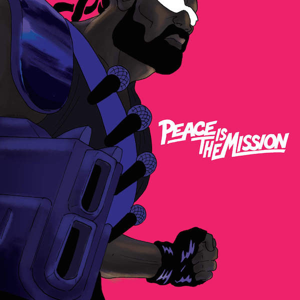
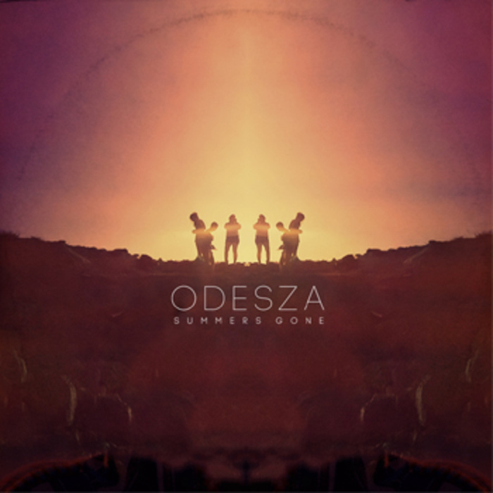
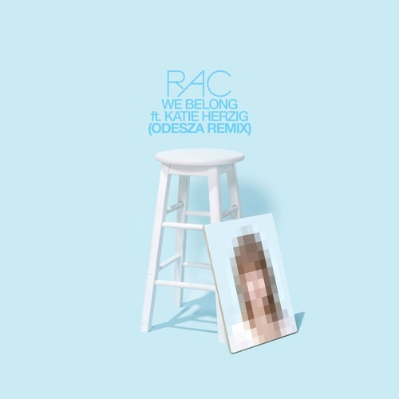
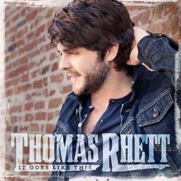
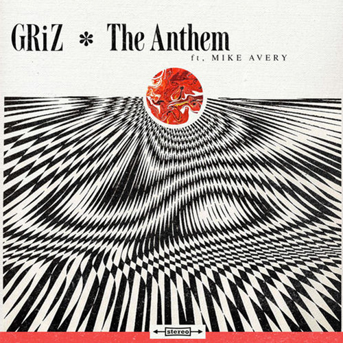
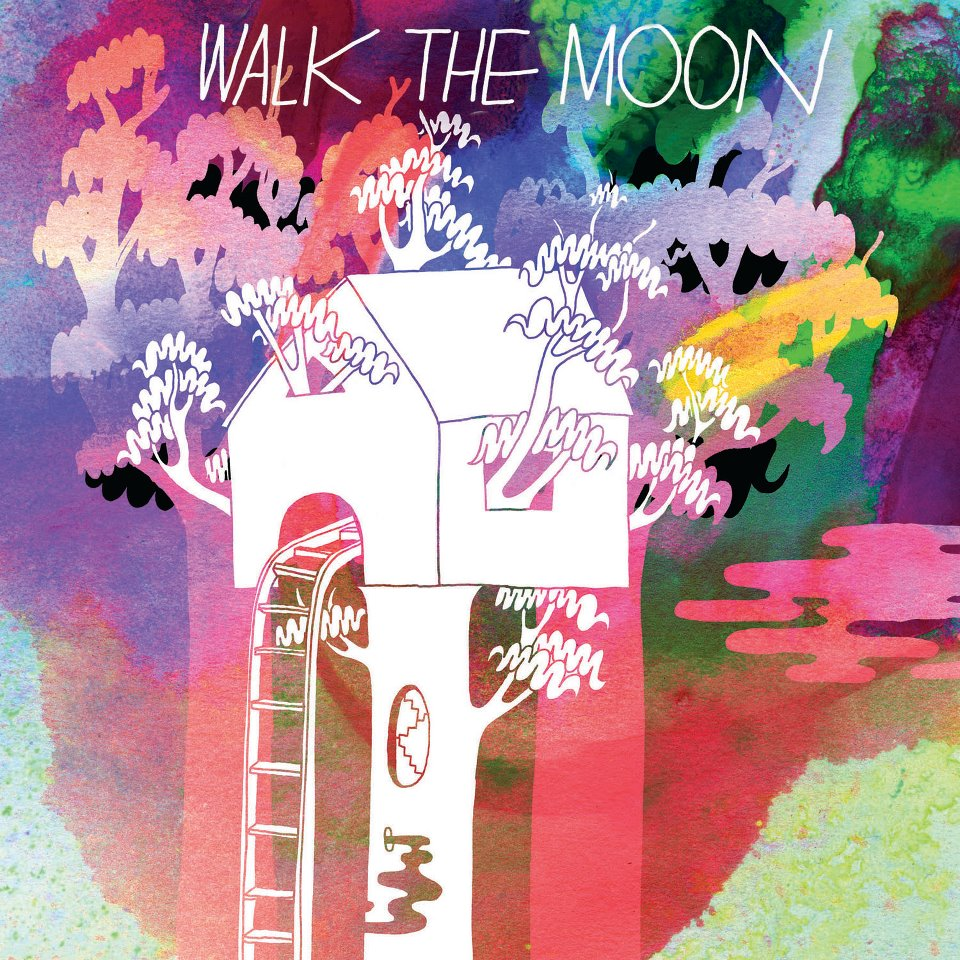

Jai Wolf was the opening act for the ODESZA concert I recently attended. I was not expecting much from an artist I've never really heard of, but this song got my attention and I've been constantly listening to it ever since. I'm sure you will enjoy it to.
Check it out below!
Be Together - Major Lazer ft. Wild Belle

Wild Belle's amazing voice along with Major Lazer's beats are a perfect combination in this song. Definitely one for the books!
Check out the song below!
iPlayYouListen - ODESZA

As I have said before ODESZA is my favorite EDM artist (and quite possibly favorite artist of any genre), this song happens to be my favorite song by them. It is just an instrumental, but something about the song is perfection and continues to be no matter how many times I put in on repeat.
Give it a listen (no pun intended)!
Lisztomania - Phoenix
Phoenix is definitely one of the biggest indie/alternative bands out there. I'm not the biggest fan of them, but this jam is a classic and will always be one of my favorites.
Check out the song!
We Belong (ODESZA) - RAC ft. Katie Herzig

Yet another ODESZA song! If you enjoyed the other ODESZA songs on this site, no doubt you will enjoy this one. The reason I love ODESZA so much is their uniqueness, and this song shows how they can make a special song in a variety of ways.
Due to YouTube copyright restrictions, I am not allowed to embed the video, but here is the link to listen to the song on YouTube! Enjoy!
The other group to open for the ODESZA concert was RUFUS DU SUL. I enjoyed every single song they did, but this one was my favorite!
Check out the song below!
Get Me Some of That- Thomas Rhett

Thomas Rhett is definitely my favorite country artist. He has only released two albums but he is already emerged as one of country music's stars. Here is my favorite song by him.
Due to YouTube copyright restrictions, I am not allowed to embed the video, but here is the link to listen to the song on YouTube! Enjoy!
Vanic is also one of my top favorite EDM artist. Vanic is on more of the trap side of EDM (meaning more bass and more upbeat). Even though I don't really enjoy trap music as a whole, this one is probably one of my top 10 favorite songs currently.
Check out the song below!
The Anthem - GRiZ ft. Mike Avery

GRiZ is an EDM artist who attended Michigan State University! For that fact, it is just by Spartan law that I include him in this site. It doesn't hurt that he is also very talented. This is my favorite by him.
Check out the song below
Iscariot - Walk the Moon

Walk the Moon is by far my favorite alternative/indie band. They are very unique and have many styles that go into their music. This is one of their slower songs and one of my favorites.
Due to YouTube copyright restrictions, I am not allowed to embed the video, but here is the link to listen to the song on YouTube! Enjoy!